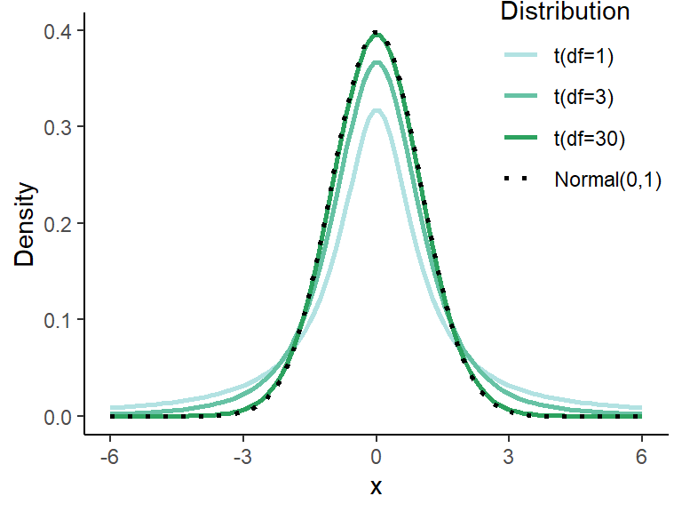
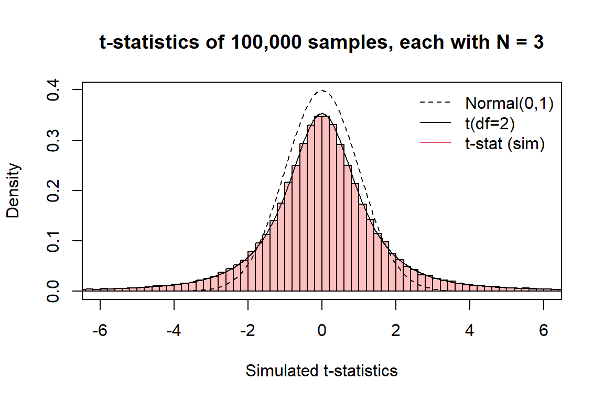
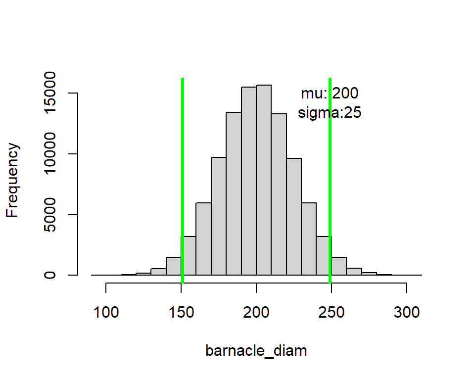
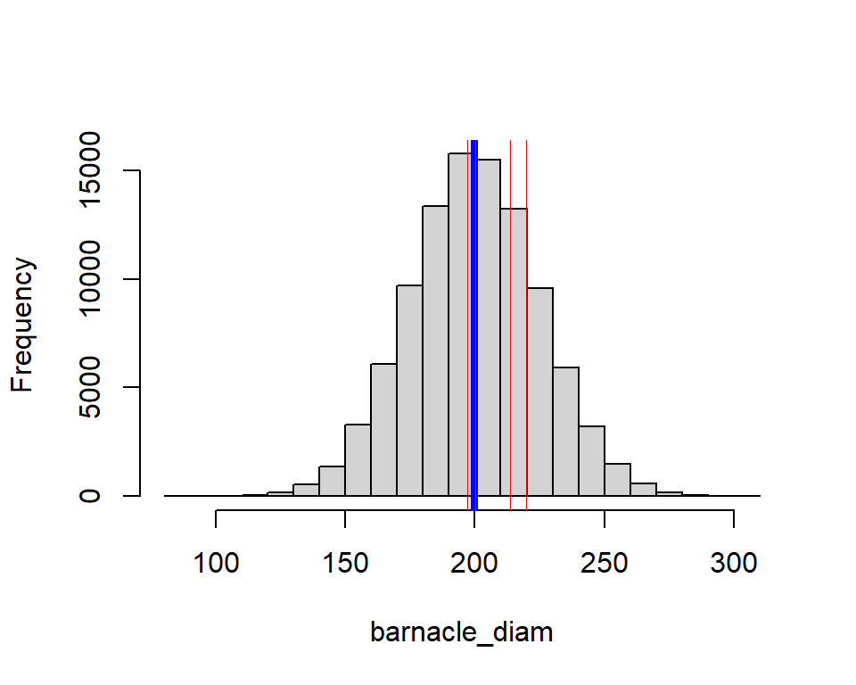
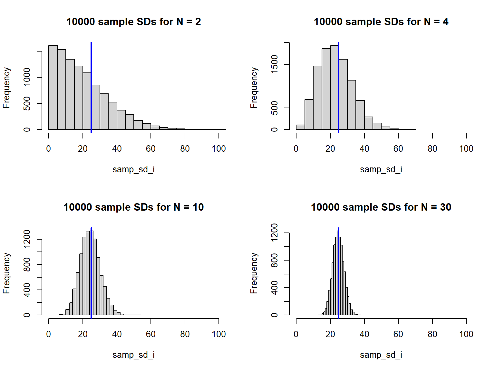
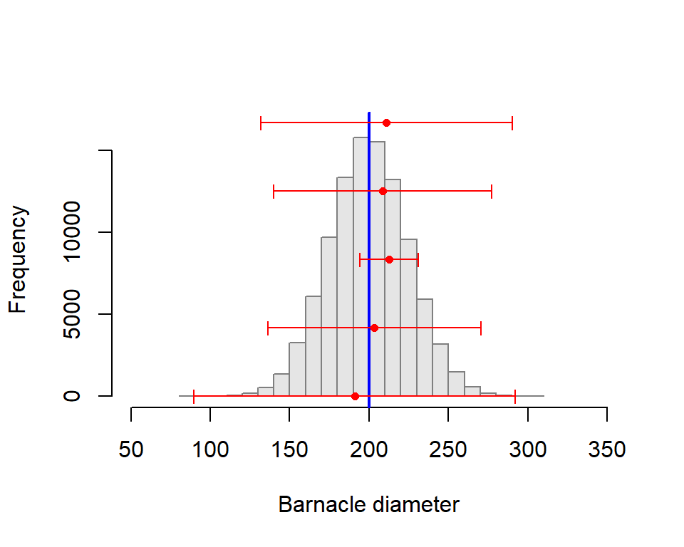
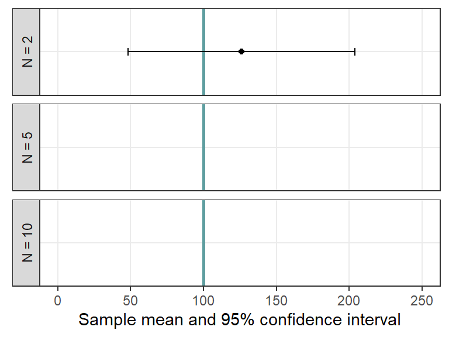

4Practical 4: T distribution and confidence intervals
The goal of science is to understand nature (i.e. everything!). To do that, we want to know the values of population parameters (e.g., the mean size of barnacles on the back-beach, the variance in fail-rate of a machine component, the maximum satellite signal strength per satellite transect, the mean size of a fisher’s catch). However, we usually cannot measure entire populations due to logistical/time/money constraints. Instead, we take a (random) sample, and infer from that sample to our population of interest. This is statistical inference and it’s based on our statistical models of the world.
When we take a random sample, we can never know how well it reflects the population.
For example, our random sample of barnacles might contain (by chance alone) mostly big ones, or barnacles that varied considerably (or negligibly) in size. The t-distribution is similar to the normal distribution, but it accounts for this added uncertainty. This enables us to estimate the probability that a given sample came from a population with any given mean (with caveats). The t-distribution also enables us to put confidence intervals around the mean of our sample, and gives us some idea of the range of values of the mean that are likely.
The t-distribution models the chances of making observations from a given population where the population parameters are estimated from your random sample. The t statistic is calculated in the same way as the Z score for samples, but the expected scores follow the t-distribution (instead of the normal distribution) which accounts for sampling uncertainty. As the sample size gets smaller we get increasingly less confident about the reliability of the population parameter estimates and the t-distribution becomes less like the normal distribution (Fig. @ref(fig:t-vs-norm)). The shape of the t-distribution depends on the degrees of freedom (\(df = \nu = N-1\)). There is more guidance on the t-distribution, and links to other sources on Brightspace.
── Attaching core tidyverse packages ──────────────────────── tidyverse 2.0.0 ──
✔ dplyr 1.1.4 ✔ readr 2.1.5
✔ forcats 1.0.0 ✔ stringr 1.5.1
✔ ggplot2 3.5.1 ✔ tibble 3.2.1
✔ lubridate 1.9.3 ✔ tidyr 1.3.1
✔ purrr 1.0.2
── Conflicts ────────────────────────────────────────── tidyverse_conflicts() ──
✖ dplyr::filter() masks stats::filter()
✖ dplyr::lag() masks stats::lag()
ℹ Use the conflicted package (<http://conflicted.r-lib.org/>) to force all conflicts to become errors
Warning: A numeric `legend.position` argument in `theme()` was deprecated in ggplot2
3.5.0.
ℹ Please use the `legend.position.inside` argument of `theme()` instead.

Comparison of different t-distributions (note that t with 30 df is nearly identical to the normal distribution).
Q116. Would you feel as confident about basing an estimate of the heights of the lab population on a sample of 2 compared with a sample of 50?
Q117. How does sample size affect the reliability of our population parameter estimates?
4.1 Single sample t-tests
This is analogous to the calculation of Z scores and enables us to determine how unlikely our sample mean is, given any hypothesized mean. However, before using any parametric tests such as t-tests, we need to assure ourselves that the model assumptions are reasonably met. Note that t-tests, as illustrated here, are not testing null-hypotheses.
Imagine we are fisheries inspectors and have sampled the cod landed by a fishing boat called the ‘The Evening Star’. We know that the mean size of the cod landed should be greater than 36.6 cm. We need to assess how likely it is that our sampled cod come from a population (of landed fish) where the mean actually is \(\geq\) 36.6 cm. We are testing the hypothesis that there is one ‘population’ of legally landed cod, and the Evening Star’s cod are a part of that population. We use the t-distribution to assess the probability the Evening Star cod are drawn from the legally-landed cod population. If this probability is low then we might speculate that the cod are, in fact, drawn from a different population (i.e., that the boat is using illegal gear).
We do not know the population mean or standard deviation of the population from which the cod were caught and hence cannot use a normal distribution to model the likelihood of observing any particular value.
Before starting problems like this always state your hypotheses. You should (unless instructed otherwise) state both the null and alternative hypothesis. Here we are wondering whether the mean cod size on the Evening Star is \(<\) 36.6 cm. The hypothesis should be worded thus:
H0 (the null hypothesis): The true value of the mean of the Evening Star cod is greater than or equal to 36.6 cm (\(\mu \geq\) 36.6 cm).
H1 (the alternative hypothesis): The true value of the mean Evening Star cod is less than 36.6 cm (\(\mu <\) 36.6 cm).
We use the t-test to determine the probability of drawing the Evening Star sample from a population where the true mean is 36.6 cm or greater.
Q118. Given the hypothesis, is this one or two tailed test?
We collect a sample of 20 fish (found in the worksheet ‘Cod lengths’). The sample size is \(<\) 30 so we can’t assume that the means will be normally distributed under the CLT. We can check the normality assumption by plotting the data using a ‘normality’ plot or ‘QQ-plot’ (Fig. @ref(fig:cod-qq)).
qqnorm(cod_df$CodLength_cm, main =NULL)qqline(cod_df$CodLength_cm)
QQ-plot for the sample of code from the Evening Star.
Q119. Do you think the normality assumption reasonable?
Q120. What parameter are we actually trying to understand/model? How does the distribution of this parameter change with sample size (think CLT)?
Now we wish to assess how likely our sample is to have been drawn from a population where the mean actually is 36.6 cm. If the ES mean is less than the ‘legal’ mean and it is ‘unlikely’ to have been drawn from the legal population we might wonder if the mean of true Evening Star landed cod population is <36.6 cm and decide to prosecute the skipper.
Q121. Use R to calculate summary statistics (mean and standard deviation/standard error of the mean) for the cod sample data (as per results below).
Q123. Now manually calculate the t statistic for this sample and determine the probability of observing your data assuming that the mean of the population was actually 36.6 cm.
Q124. How does this value compare to the expectation under the null hypothesis? Use pt().
Q125. Check you answer against that given by R.
t.test(cod_df$CodLength_cm, mu =36.6, alternative ="less", conf.level =0.95, var.equal =TRUE)
One Sample t-test
data: cod_df$CodLength_cm
t = -2.3515, df = 19, p-value = 0.01482
alternative hypothesis: true mean is less than 36.6
95 percent confidence interval:
-Inf 36.38429
sample estimates:
mean of x
35.785
Hopefully your manually calculated t statistic and the one generated by R match. The p-value given by R is exact i.e. there is a probability of 0.014819 that a sample of 20 cod with mean of 35.785 cm would be drawn from a legally landed cod population where the true mean was 36.6 cm or more (assuming model assumptions are met).
Q126. Can we now confidently send the skipper to jail?
Remember the confidence interval relates to future (often hypothetical) observations, not an observation that has been made. Confidence intervals are notoriously difficult to define and and are often incorrectly used. BrightSpace has numerous resources to help you.
Evaluating evidence is a central part of statistical analysis/modelling. In this example, assume you are evaluating whether a fishers catch is ‘surprisingly’ small (e.g. that the fisher is using an illegal net). If you don’t believe the fisher (i.e that the fish sample was not drawn from a population of fish with a mean of 36.6 cm) then she goes to jail. If you do believe her, but she was fishing illegally, she avoids jail. In these circumstances you should set-out your P-value thresholds ahead of getting the data. For the moment, assume we set the P-value (\(\alpha\) value) threshold at 0.05. In this scenario, where we have two clear competing hypotheses, we are in the realm of ‘Neyman-Pearson’s’ decision theory (not in Fisher’s hypothesis significance testing approach; see P-value lecture).
Q127. Given the P value, do you reject the null hypothesis?
Q128. If you had set alpha at 0.01 would you reject the null hypothesis?
Q129. If you set alpha at 0.01, rather than 0.05, what type of error are you reducing and what type of error are you increasing?
Now to play around with some random data that you generate yourself. We generate 100 random numbers drawn from X, where \(X \sim Norm(100, 10)\).
Q130. What is your standard deviation in this model?
Q131. What does the symbol ‘~’ mean?
We calculate summary statistics for this randomly generated dataset. Note that in this case, we know the population parameters.
Note: these are random samples, so the values will be different each time you run the code. However, R uses pseudo-random number generation. Use set.seed() for fully reproducible code.
Q132. Is there a discrepancy between the population parameters you defined and the actual mean and variance that are estimated from the samples?
Your answer to the above should be yes. You know there is a discrepancy because you know the true parameters. In most real life situations you do not know the true population mean and variance. You can only sample them. If your sample is very large (and representative) then you can generate a very good estimate of those population parameters. However, as your sample size is reduced, the reliability of your estimate decreases. Look at the random numbers you’ve generated. Get a sense for where most of the numbers lie with sigma=10. To output your sample, just run sample_i.
The t-distribution is the distribution of values you get when you subtract sample means from the true mean and standardize by the sample standard error (i.e., \(\frac{\bar{y} - \mu}{SE_{\bar{y}}}\)). Think about this and relate it to the formula for determining single-sample T-statistics and what the critical values actually are.
The code below simulates repeated samples from a population with \(y \sim Norm(\mu, \sigma)\). Each sample takes sample_size individuals, with num_samples unique samples. For each sample i, the t-statistic is calculated and stored in T_sample[i]. Fig. @ref(fig:t-stat-hist) shows the distribution of T_sample (the histogram) with the corresponding t-distribution (df=sample_size - 1) as the solid line and a standard normal distribution as the dotted line. Play with the values for sample_size below to see how the shapes change.
mu<-10# population meansigma<-0.5# population sdnum_samples<-1e5# number of samplessample_size<-3# size of each sampleT_sample<-numeric(num_samples)# sample t statistics# for each repeat: draw a sample, calculate SE and T, and store T in T_samplefor(iin1:num_samples){sample_i<-rnorm(sample_size, mu, sigma)sample_SEM<-sd(sample_i)/sqrt(sample_size)T_sample[i]<-(mean(sample_i)-mu)/(sample_SEM)}curve(dnorm(x, 0, 1), from =-6, to =6, lty =2, xlab ="Simulated t-statistics", ylab ="Density", main =paste("t-statistics of", format(num_samples, big.mark=",", scientific=F), "samples, each with N =", sample_size))hist(T_sample, freq =F, add =T, col =rgb(1, 0, 0, 0.25), breaks =seq(floor(min(T_sample)), ceiling(max(T_sample)), by=0.2))curve(dnorm(x, 0, 1), from =-6, to =6, add =T, lty =2)curve(dt(x, sample_size-1), from =-6, to =6, add =T)legend("topright", lty =c(2, 1, 1), col =c(1, 1, 2), bty ="n",c("Normal(0,1)", paste0("t(df=", sample_size-1, ")"), "t-stat (sim)"))

Histogram of 100,000 t-statistics calculated from 100,000 samples, along with the corresponding theoretical t-distribution (solid line) and a standard normal (dotted line).
Notice how the histogram and the solid lines are nearly identical? These simulations illustrate that the t-distribution is the distribution of t-statistics for a given sample size.
4.2 Confidence Intervals
Say you are interested in knowing the mean of a population (e.g. barnacle mass on the back beach). You cannot afford to determine the mass of each barnacle, so you take a random sample. You don’t know how ‘good’ (i.e. representative) your sample is. It might have included lots of small barnacles, or big ones, or a wide- or narrow-range of sizes, you can never know (unless you sample everything). When you calculate the mean of this sample you don’t know how close it is to the population mean, but you do know the probability associated with that estimate. Confidence intervals capture this uncertainty, and you use the t-distribution to determine them.
We’ll invent a population of barnacle diameters, called barnacle_diam, and then create a histogram of that population and superimpose values on that. Again, these are random numbers so your values will be slightly different from mine.
pop_size<-100000# number of barnacles in the populationbarnacle_mu<-200barnacle_sigma<-25barnacle_diam<-rnorm(pop_size, mean =barnacle_mu, sd =barnacle_sigma)mu<-mean(barnacle_diam)sigma<-sd(barnacle_diam)hist(barnacle_diam, main =NULL)Q95<-quantile(barnacle_diam, c(0.025, 0.975))abline(v =Q95, col ="green", lwd =3)text(x=Q95[2], y=pop_size/7, labels=paste0("mu: ", round(mu, 1), "\nsigma:", round(sigma, 1)))

Histogram of a simulated barnacle population with 2.5% and 97.5% quantiles.
Now we can take samples from that population: this is the reality, you take samples (usually) from populations where you don’t know the true mean and standard deviation. Let’s take 4 samples, each with size sample_size.
hist(barnacle_diam, main =NULL)sample_size<-5num_samples<-4abline(v =mu, col ="blue", lwd =4)for(iin1:num_samples){sample_i<-sample(barnacle_diam, size =sample_size)print(sample_i)abline(v =mean(sample_i), col ="red", lwd =0.5)}

Histogram of the barnacle population showing location of 4 sample means (red lines), each with N = 5. The blue line shows the true population mean mu.
Our sample means inevitably differ from the true population mean (\(\mu\)), even if only a bit. Likewise, the sample standard deviations will differ from the true population standard deviation (\(\sigma\)). If you keep repeating this sampling you can generate a distribution of sample standard deviations. This distribution is not normal, but is instead related to the chi-square distribution (don’t worry too much about this). The point is that if your sample size is small, your estimate of the standard deviation is often very poor.
par(mfrow=c(2,2))# sim_df will hold the sample sizes N, and the median and mean sample sd's num_samples<-1e4sim_df<-data.frame(N=c(2, 4, 10, 30), sd_median=NA, sd_mean=NA, sd_q025=NA, sd_q25=NA, sd_q75=NA, sd_q975=NA, mn_median=NA, mn_mean=NA, mn_q025=NA, mn_q25=NA, mn_q75=NA, mn_q975=NA)# for each sample size N, draw a sample and store its mean and sd# repeat this num_samples times# plot a histogram of the sample sd's, then store the mean and medianfor(iin1:nrow(sim_df)){samp_sd_i<-numeric(num_samples)samp_mn_i<-numeric(num_samples)for(jin1:num_samples){sample_ij<-sample(barnacle_diam, size =sim_df$N[i])samp_sd_i[j]<-sd(sample_ij)samp_mn_i[j]<-mean(sample_ij)}hist(samp_sd_i, main =paste(num_samples, "sample SDs for N =", sim_df$N[i]), breaks =20, xlim =c(0, 100))abline(v =sigma, col ="blue", lwd =2)sim_df[i, 2:13]<-c(median(samp_sd_i), mean(samp_sd_i),quantile(samp_sd_i, probs =c(0.025, 0.25, 0.75, 0.975)),median(samp_mn_i), mean(samp_mn_i),quantile(samp_mn_i, probs =c(0.025, 0.25, 0.75, 0.975)))}

Histograms of sample standard deviations from repeated samples of the same population. The true population standard deviation is shown in blue.
Mean (black), median (blue), and 50% and 95% quantiles (vertical lines) for (left) sample standard deviations at each sample size compared to the true population standard deviation (dotted line) or for the (right) sample means.
Q133. What is the most common standard deviation for your samples by sample size?
The t-distribution allows for the fact that the standard deviation of small samples is, usually, less than that of the population as seen in Fig. @ref(fig:sd-N-hist).
The take home message here is that when you take a sample from a population with unknown \(\mu\) and \(\sigma\), you won’t know how ‘accurate’ you sample is but you do know how your random samples ‘behave’ - they are modelled using the t-distribution. From this knowledge you can build a 95% confidence interval which is described as an interval which, if repeated for 100 samples, would include \(\mu\) within its boundaries in 95 of those samples (on average). Read that again. You don’t have knowledge of the true value of the mean or sd (as you did for Z score calculations) and the t-distribution accounts for this uncertainty.
num_samples<-5sample_size<-3# plot populationhist(barnacle_diam, xlim =c(barnacle_mu-6*barnacle_sigma, barnacle_mu+6*barnacle_sigma), main =NULL, ylim =c(0, length(barnacle_diam)/6), col ="grey90", border ="grey50", xlab ="Barnacle diameter")abline(v =mu, col ="blue", lwd =2)y_pos<-seq(0, length(barnacle_diam)/6, length.out=num_samples)# draw samples, calculate mean and 95% CIs, and plot themfor(iin1:num_samples){sample_i<-sample(barnacle_diam, size =sample_size)points(x =mean(sample_i), y =y_pos[i], col ="red", pch =16, cex =0.75)sample_ci<-c(mean(sample_i)+qt(0.025, (sample_size-1))*(sd(sample_i)/sample_size^0.5),mean(sample_i)+qt(0.975, (sample_size-1))*(sd(sample_i)/sample_size^0.5))arrows(sample_ci[1], y_pos[i], sample_ci[2], y_pos[i], col ="red", code =3, angle =90, length=0.05)}

Histogram illustrating the barnacle population with population mean (blue) and sample means with 95% CIs (red) repeated across 5 samples.
Q134. Try different values for sample_size. How does this influence the width of your CIs?
Q135. What proportion of your 95% CIs would you expect to include the true value of the mean? Does the sample size have an impact on this?
Q136. Keep repeating the above code until you get an example where your 95% CI misses the true value of the mean.
Q137. See if you can find the relevant bit of the code, and determine 99% and 90% or 75% CIs (pick any value you fancy, but note that some values are likely to put the CIs some distance from the mean so get ready to adjust your axis limits which are set to 6\(\sigma\)on either side of\(\mu\)).
Let’s explore the influence of sample size on the width of the confidence interval a little more.
We will plot the resultant mean estimate and 95% CI on Fig. @ref(fig:ci-v-N). NOTE: the example shown in Fig. @ref(fig:ci-v-N) is a random example, not linked to the output below. Repeat this process, but this time determine the mean and sd (or variance) for samples of 2, 5 and 10. Do this simply by changing n=… in rnorm() Repeat this 5 times for each sample size and sketch your results (where they fit) onto Fig. @ref(fig:ci-v-N).
One Sample t-test
data: a
t = 0.48951, df = 9, p-value = 0.6362
alternative hypothesis: true mean is not equal to 100
95 percent confidence interval:
94.13027 109.11153
sample estimates:
mean of x
101.6209
Warning: Removed 2 rows containing missing values or values outside the scale range
(`geom_point()`).
Warning: Removed 2 rows containing missing values or values outside the scale range
(`geom_errorbarh()`).

Confidence interval size vs. sample size.
Q138. Look at your 95% confidence intervals – are they getting broader or narrower as your sample size decreases?
Q139. What proportion of 95% CIs would you expect to include the true value of the mean?
4.3 Comparing means (two-sample t tests)
The two-sample t-test is one of the most widely used inferential statistical tests. The two-sample t-test is a special case of analysis of variance (ANOVA) where you are only comparing two means. The results are identical and so we do not focus on two-sample t-tests. You need to know of the existence of the two-sample t-test because it is so commonly used and cited, but you will be comparing means using ANOVA in Practical @ref(glm).
4.4 Non-parametric Tests
Non-parametric tests are often used to compare samples where the data are non-continuous or fail the assumptions of parametric general linear models, typically converting data to ranks rather than using the actual values. Non-parametric test include ‘classics’ such as the ‘Mood’ and ‘Wilcoxon’ tests. However, we make you aware of the GLM family which will usually supply you with a much more elegant solution to model data that doesn’t fit the simple linear model. You should be aware of the existence of ‘non-parametric’ tests because they are prevalent in the literature. Remind yourself of the disadvantages of non-parametric tests.
4.5 Conclusions
The t-test is a ‘classic’ statistical test which doesn’t assume knowledge of population parameters. The strength of the t-test (its ability to quantify differences between samples) is proportional to the sample size. The larger the sample size, the better the estimate of the population parameters and the more precisely we are to be able to detect differences between the means.
The central limit theorem tells us that the means of non-normally distributed data will be normally distributed if the sample size is sufficiently large. If your sample size is \(>\) 30 it is likely that the means of that sample will be normally distributed regardless of the distribution of the original data.
Parametric tests including the t-test are quite ‘robust’ against deviations from normality, particularly as sample sizes increase. However, parametric test are less robust against heteroscedasticity, regardless of sample size. Always check this assumption and be prepared to transform the data if the assumption of homoscedasticity is not tenable (more of this in Practical @ref(glm)).
The t-test is in the ‘general linear model’ family (and this is a subset of the generalized linear modelling family). General linear models are usually used to model continuous data. If you have count data, you should start with a different member of the GLM family (you might not be able to transform count data to something approximating a normal distribution). Non-parametric tests are frequently adopted when data do not conform to the assumptions of normality but they are invariably used for NHST with all the inherent problems with that approach.
A final reminder with regard to many statistical tests, including all in the GLM family: they make the assumption that data are independent. You must always ensure that your experimental design lends itself to making independent observations in relation to the question you are asking. This is the most critical and fundamental of the assumptions of parametric and non-parametric tests. Non-independence (e.g. measuring the same ‘subject’ (e.g. an urchin) over time) can be modelled using more complex ‘mixed’ models. Application of mixed modelling is beyond this course but you should be aware of the limitations of the techniques that you are learning and know where to go next.